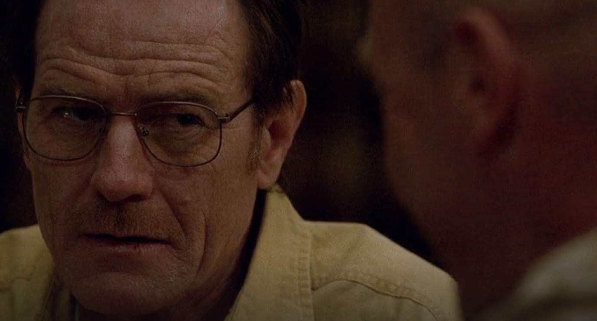

PRELUDE
January 1st, 2026
"In Which I Watch (and write about) Every Episode of Breaking Bad"
Hello! You've discovered the part of the website where I will write about (hopefully) every episode of breaking bad, and probably better call saul too. I thought it would be fun since I've never seen either show, and people say they're the best shows ever.
Here's everything I know about the show going in:
◘ Walter White is chemistry teacher, has cancer(?) and a wife named Skylar. Jesse Pink Man is his student. Walter ropes Jesse into cooking meth. There is a lawyer named Saul.
◘ Rhea Seehorn (actor) who I know from Pluribus is in it somewhere.
◘ I've seen some assorted memes here and there (walt screaming in the car, walt and jesse high fiving, etc)
◘ From reading the wiki page from Pluribus, it seems like there's some kind of submachine gun in season 5(?)
◘ And finally, most importantly, at some point Jesse hangs out with a girl and plays Sonic and Sega All Stars Racing. This is my most anticipated part of the show.
Season 1 Episode 1:
January 1st, 2026
"Walt Inhales the Phospher Gas That Makes You Good at Sex (or, Walter White and the End-Life Crisis)"
Walt's terminal cancer diagnosis leaves with little to lose and a desire to leave money for his family. He does some underwear meth cooking with an ex-student of his, making the best meth anyone's ever made, killing 1.5 guys in the process.
I'm already fascinated by how much different this show is than what I had imagined, based on what little I knew. This episode puts in so much work to show you just how sad Walt's life is, to the point that he barely reacts when he finds out he doens't have that much of it left. For all I had known about the show going in, I'd assumed that Walt was (and this sounds stupid, but it's true) closer to a typical "Badass Male Dude". Using heavy quotes around that because the people I'm imagining are, like, the joker and the guy from fight club. The kind of people who are probably direct allegories for toxic masculinty but some people still think they're totally cool and awesome.
I'd written in the prelude that Walt ropes Jesse into making meth, which I'd kind of assumed based on my other assumptions about Walt. Funny to see that my assumptions were kind of turned on their head, while still not being technically false. In fact, we've kind of burst through most of my knowledge about the series right here. No need to waste heaps of time on the setup.
Have to leave a note here for my least favorite character so far, Hank. Racist Cop who completely ruins Walt's 50th to watch a bland ass news broadcast of him on the TV. I hope he gets phospher exploded.
Season 1 Episode 2:
January 2nd, 2026
"Walt Sucks at Lying, Muder, Teaching, Disposing of Bodies, and Being a Husband (or, Skyler and the Discovery of MILFs.)"
Walt and Jesse deal with the fallout of the 1.5 guys Walt killed last episode, Skyler discovers something's up and traces a lead to Jesse's house, where she confronts him.
I had to keep adding to my title for this one as the episode went on because Walt kept doing more stupid stuff. To be honest, there's so much going on and he's so bad at it (well, him and Jesse really) that I'm shocked this show can go on for more than one season. Either they've gotta get so good at covering their tracks that they become practically invisible, or they die at the end of season one and it's the greatest plot twist in the history of tv shows.
I honestly have no idea where Walt and Skyler's relationship will develop from here. I can't see Skyler staying in the dark about Walt's dealings for long (unless she just really believes in the weed dealer cover story), so is she still a character later in the show? (I also have a bad feeling that their baby daughter won't live very long.. I hope the bit about the chemicals that cause birth defects wasn't foreshadowing...)
I'm also coming to realise that this show is less about "two guys that cook meth" and more "What if a regular guy got himself caught up in criminal affairs".
Season 1 Episode 3:
January 3rd, 2026
"The Hank and Marie Stupid Hour (or, Murder is BAD)"
After a misunderstanding (and some just plain not listening) between Skyler and Marie, Marie sends Hank to intimidate Walt Jr out of smoking pot. Walt murders a guy in the longest, most drawn out and morally difficult way possible.
Absolutely my favorite episode so far. Walt talking to Krazy-8, knowing that he'll need to make a terrible choice that he doesn't like either outcome of, is the most compelling plot here yet. He desperately wants to believe that he's nice, that he can let him go, but he knows he can't trust him for sure. Writing the pro/con list is amazing characterization. Walt is so out of his depth, he's applying his regular thought processes to this absolute horror show like it's a math problem. Him noticing the broken plate shard, then, is almost an excuse. Perfect. Krazy-8 was probably the smarter person in the room, def my favortie character so far.
Hank continues to be awful, a trait that his wife also seems to share a little.
Season 1 Episode 4:
January 3rd, 2026
"Jesse Pinkman and the Almost Most Suburban American Family of All Time (or, 'Everybody Digs The Meth We Cooked')"
Walt finally (involunterily) tells his family about the cancer, and Jesse takes a visit back home because the meth he smoked makes him see mormons in their true form. Walt blows up an evil buisnessman's car.
Jesse's family dynamic is fascinating. I'm not sure how the ages work out on him and his brother, but it seems like maybe his parents had another kid after Jesse turned out to be a bit of a dropout? Insane if true. Even more insane still, then, that the other kid seems to be still on pot behind their back. Genius. (also do they have a maid?)
So much of the stuff that happened in this episode would be impossible in the current day, and it kind of made me jelous. Walt can just blow up a guy's car, in broad daylight, at a gas station, and nobody knows it was him. A million reasons that wouldn't work today, but god would it feel good to do this to a tesla.
Love Jesse coming back to Walt in this episode after he sees that there's opportunities to make even more cash. It feels like the two are in constant cycles of trying to get out of the game > getting pulled back in by the other one.
Season 1 Episode 5:
January 4th, 2026
"The Surprise Intervention Snack Platter (or, Walt refuses money from a rich CEO)"
Skyler & Walt visit a birthday party for Watt's old lab partner (now rich CEO), he offers to pay for the cancer treatment but Walt declines. Jesse doesn't want to work as a sign spinner so he tries making glass from scratch. After an intervention from his family, Walt decides to begin chemo.
I continue to be surprised (and delighted, thought that doesn't feel like exactly the right word to use in this context) about how much more this show is about 'dealing with a terminal cancer diagnosis' than 'cool guys cook meth'. It's been some of the more compelling parts of the show so far. The intervention especially, where Walt lays out his argument against taking the treatment before ultimately deciding to anyway, was very powerful. Fascinated to learn what happened between Walt and the Rich Buisness Couple for Walt to reject both offers so completely.
Season 1 Episode 6:
January 4th, 2026
"Walt Faces Two-Progned Hell: Chemotherapy and a Cop Coming to His Workplace (or, Walt's Really Really Lucky These Cops are Extremely Racist and Dumb As Rocks)"
As the chemo starts showing it's effects on Walt, the police track a discarded respirator back to Walt's School, and end up arresting a cool janitor because they're racist. Jesse fails his speech check with the biggest meth distributor in town and gets beat up, so Walt has to come in and blow them up to get their money.
I'm beginning to see the tramsformation from regular man Walter White to the badass meth cooking bald old man "Heisenberg" from my original conception of this show. Granted, his plan was insane, and none of that should've worked the way it did, but it was badass. ( wonder if there's an explanation as to why he chose Heisenberg? I'm not sure if it's explained later in the series (or earlier and I missed it), but either way I'm scared to google it in case of spoilers.)
Backtracking to a little earlier in the episode, the poker scene was so characterful, especially in how Walt reacts to Hank boasting about arresting Hugo. It's in reaction to this that Walt stares at Hank and says "I'm going all in" and we the audience are like "ah, I see, he's talking about the meth". Also the face Walt makes when Hank says he wouldn't be able to recogise a criminal is so fucking funny.

Season 1 Episode 7:
January 5th, 2026
"Awkward Social Situations Induce Physical Pain in Me, the Viewer (or, Walt and Jesse's Silly Heist)"
Skyler tries to return a baby shower gift from Marie, realizing she shoplifted it. Walt and Jesse come up on some buisness trouble, end up stealing some chemicals and cooking in the basement of Jesse's open home.
This is the one where Walt puts on the hat! He also, despite being a fictional character, manages to induce a stress response in me in real life. I have a weakness to awkward situations, so Walt and Jesse cooking at the open home instilled fear in me. Good thing they didn't linger on it too long.
If I'm correct, this is the final episode of Season 1! We end on what very much seems like a 'season 2 hook', Walt and Jesse realising that they're in for good and it's gonna take a lot of effort to get them out. If I keep up a pace like this, I might be finished with the whole show before the end of January...
Season 2 Episode 1:
January 11th, 2026
"Everyone Get An Expressions Upgrade And a Cognitive Downgrade (or, the Green Goo Episode)"
Walt and Jesse panic about the Tuco situation, the family continues to break down as everyone gets more stressed.
First episdode of the second season, they really start shit up. Everyone is kind of only getting worse. Walt is treating Skyler worse and worse, and it's kind of infuriating to watch. I look forward to (hopefully) watch him get better.
Also, Skyler is my new favorite character. She's just kind of trying her best to stay together. I hope she makes it out.
Season 2 Episode 2:
January 11th, 2026
"Tuco Plays With His Food (or, My Arch Enemy, Hank Schrader With A Website)"
Walt and Jesse escape Tuco's kidnapping, and Skyler puts out the missing persons report for Walt.
Absolutely the best episode so far. The kind of television to keep you twisted in a suspenseful pretzel for the entire hour long runtine. They take a lot of care to slowly set up a lot of dominoes, so many possible plot points that could reslove by the end that by the time Hank shows up, I was actually happy. Walt and Jessie bickering about the possible murder methods was also peak. Jesse could not help making murder jokes about the laced crack.
This episode was a rare good showing for Hank. Asside from the first part I think, he really seemed more compitent than he usually did.
I genuiniely don't know how much longer Walt can keep everyone in the dark. He seemed like he was on such thin ice last season, we're on the second out of 5 and he's already gone publicly missing, and now Hank is practically within sniffing distance (though he doesn't know it).
Season 2 Episode 3:
January 11th, 2026
"Walter White's Lying And Truthing and Naked Adventure (or, Tio Shits On The Police)"
Walt pulls a stupid bit to explain away his abscence, and Jesse escapes interrogation thanks to Tio's unwillingness to snitch.
Walter White loves lying to his wife. It's his favorite thing to do. He's terrible at it, and she never believes him, but he does it anyway. I'm not even sure he loves her. He does do a funny bit pretending like he was gonna go to 7/11 naked.
Hank completely un-redeemed himself this episode this time. Mega racist, trying to force confessions out of everyone. Also the police station makes him a cake to celebrate killing a guy in a shootout? jesus.
Season 2 Episode 4:
January 11th, 2026
"Walter Puts on the Mask and it Doesn't Work (or, Skyler White, The Best Character In The Universe)"
Skyler gives Walt a taste of his own medicine, Jesse's parents kick him out of home, so he looks for 'alternative options'
Walt is really laying on thick here, and it's kind of freaky to watch. It feels like Skyler has flipped the roles intentionally on him, and it's kind of fascinating to wtch. It feels like he doesn't know what to do. I love it. She knows exactly what she's doing. Especially at the end.
Jesse's having the no good very bad worst days of his life. He turns sad and blue :(. The final scene was so good. Love it. Starting with them in a looney tunes ass fight cloud and ending with sulking in the kitchen over breakfast...
Season 2 Episode 5:
January 11th, 2026
"Walter White admits to One Mistake (or, Jesse Starts A Pyramid Scheme)"
The Duo get back to cooking, Jesse hires out his goons to move the meth for him. Hank has PTSD and makes beer.
Almost everyone except Skyler continues to be silly in this episode. Walt's lack of self awareness continues to baffle, and Jesse digs himself deeper.
Also, Hank mas his own beer, with his own custom label? And a theme song he sings while he makes his custom beer? I'm very glad I don't know anyone like him.
Season 2 Episode 6:
January 18th, 2026
"The Missing Money Episode (or, Jesse's Haunted Kid House Experience)"
Jesse goes after his stolen drugs & cash, Walt goes back to work and Skyler starts Discovering stuff about the money that was supposed to come from Gretchen and Eliott.
Walt continues to be bad at everything. He can't keep a class's attention for shit, and his lies just compoounding and getting worse and worse. He sucks at this so bad. I swear, I can't take many more conversations between Skyler and Walt where he lies to her face for minutes on end.
I liked Jesses plot here also. I think he's secretly some kind of chaos god, manipulating chance in his favor.
Season 2 Episode 7:
January 18th, 2026
"Breaking Bad: The Musical (or, Jesse!! You're A Blowfish Jesse!!!)"
The streets feel the ripple effect of that guy's head getting crushed by a vending machine last episode. Walt convinces Jesse he's a blowfish. Hank doesn't fit in with the Big Cops cause he sucks. Jesse's failrizz works on his neighbor.
I'm getting worried for my GOAT Skyler... She doesn't have it good this episode. Jesse has a great time though. Insane that Walt's able to get him out of his depressive funk by calling him a blowfish, and that the lasting confidence from that carries him all the way into getting in with his cool neighbor.
Actually so shocked that Jesse got in here. She likes him so much that she didn't mind his male living space or his failed TV install. Insane. I think this might be the one he plays Sonic Racing with later...
Season 2 Episode 8:
January 18th, 2026
"Hank Can Only Give Real Talks About Meth (or, Saul Goodman Advertisies His New TV Show, Now Out on AMC)"
Badger gets busted, Hank gets traumitized so he goes back to the small leauges, and Saul Sauls all over the place.
Walter can only be real with someone when it's inconvenient for him. I feel like he's turning Hank into his worst enemy., the drugbusting machine.
..I can see why they made a spin off about Saul. He's only been on for half an episode and he immediately steals every scene he's in. Actually insane. As far as his role in he story goes, I'm very glad we have a character who seems competent at doing criminal stuff, I get the feeling he's going to be good to watch.
Season 2 Episode 9:
January 18th, 2026
"A Weekend Out With The Boys In The RV (Crankin it 24/7)"
Walt (pretending to visit his mother) and Jesse go on a meth excursion & get stranded in the midde of nowhere.
I love the breifest glimpse we get here of Walt and Jesse being actually friendly with each other! That high five was cute.
Season 2 Episode 10:
January 18th, 2026
"Heisenberg Comes Out At The Party (or, The Breaking Bad Stupidometer)"
Walt gives Flyn too many drinks and makes him vomit, so he does some housework about it. Jesse has some relationship teething problems.
Been thinking about how I'd rate everyone on a theoretical stupidometer. Cause everyone here's a little stupid. From most to least stupid: Walter, Marie, Hank (rasicim), a big gap , then Jesse, Jane, Skyler, and finally Saul. (feels bad not to give Skyler the #1 spot, but Saul basically talked his way out of being executed a couple episodes ago.)
Season 2 Episode 11:
January 31st, 2026
"Walter And The Telltale Choice (or, Never Trust a Kid)"
One of Jesse's dealers gets shot, so they go to Saul for a new plan. The new plan is Gus Fring.
Skyler had a rough time of it in that workshop. Honestly extremely uncomfortable to watch. < I wrote that before she had to expose her boss's accounting fraud to her boss.
Walter was having a fun time trying to build a mob and (unsucsessfully) meting with Gus for the first time. Giancarlo Espisito is in this show! I forgot. Can't speak much to his character, at least by now, but I'm excited to see more. He faces the telltale games ass choice at the end.. press X to see your daughter's birth, press O to make cash
Season 2 Episode 12:
January 31st, 2026
"NEW ZEALAND REFERENCE!!! (or, The Walter Website)"
Skyler has the baby! Jesse tries to play detective to figure out who took the meth yesterday (it was Walter). He gives Jesse some shit for it. They have a falling out.
Good on Flyn for making a website! Walter is actually crazy about this cash. "My family can't know I got all this money from meth, but they also need to know that it was Me who made the cash". World's most stubborn man.
I feel sorry for Jane and Jesse. Her dad is really not making it easy on her relationship with drugs. Hopefully some good things can come to Jesse out of it though, and things get better for him. Surely nothing gets worse in the three seasons that follow, right?
(I'm later in the episode now. I really like that Jane is making moves, she seems smart and I hope it doesn't turn out bad for the two of them)
(end of the episode) GOOOOODDDDDD DAMN ITTTTTTTTTTTTTTT
Season 2 Finale:
January 31st, 2026
"I AM SO CONFUSED (or, SKYLER WHITE: ACE INVESTIGATOR)"
Jesse is reeling from Jane's death, so he goes and hangs out in a den about it. Walts website catches on thanks to some Saul-y interference. Walter and Jesse take a Spa Day!! The teddy bear is from a random plane crash.
Someone get walter out of the TV interview!! He's gonna throw up hearning his son say nice things about him!!!
The ending of this episode made me genuinely speechless. Babbling incoherrently at the tv as the credits played. Up until this point, the show has been really good at setting things up and paying them off. The episodes in the first season that set up future plot points (I'm thinking of the pilot in particular) take effort in introducing a lot of confusing details, and then paying them off in a satisfying way. This fucking payoff. With the bear. Hit me so out of left field. They set up the bear so early in the season, they take a lot of care in it. They show the bear multiple times, in black and white, they show investigators taking bodies away from the house and the whole season you're thinking ok.. who dies here. which two major characters are dying at the household. And while the season goes on you start thinking 'huh... thought I woulda seen that bear by now. The opener makes it really important'. By the time they bring it out again for the start of the finale you're really cofused, but as the episode goes on you kind of forget about it. And then, as we start rounding off the episdoe, you're riding high off of the confrotation between Skyler and Walter. This is really making it feel like a finale, things are getting resolved. Awesome. Then, we keep cutting back to Jane's dad. He's having a tough time dealing with Jane's death, that's sad to watch. He's distracting himself with his work. He works in.. air traffic control? ok... then he causes a plane crash?? why did they write that? What narrative purpose does this plane crash serve other than getting the bear in the pool, a plot point that they CAME UP WITH. Seriously, was it planned to be this way from the beginning? I have a hard time believing so, since it wasn't foreshadowed even slightly in previous episodes, but if it wasn't planned then why the hell did they foreshadow the bear in the first place???? I am so confused.
Season 3 Episode 1:
February 6th, 2026
"I Am Grabbing Walter By The Neck And Shaking Him (or, The Crawlers in the Yellow Planet)"
Walter & Skyler have a divorce about it all. Jesse has a tough time at his peaceful retreat. Walt has a tough time because he sucks, and he gets a new offer from Gus.
This show is officially silly. I have decided this. So many parts of this episode read as super funny to me. The crawling twins. The extremely obnoxious yellow screen filter. Walter's big gym speech about how the plane crash actually wasn't that bad. Hank being extremely oblivious.
I'm still baffled by the direction they're taking to follow this plane crash. It's clear that, to some degree, both Jesse and Walt blame themselves for it. And I still think that's a stupid way to try and introduce concequences for their actions. Walt even raises the point to Jesse in the episode that he's not really to blame, and I have to agree. Sure, technically without Jesse it wouldn'tve happened, but he can't really be blamed for Jane's dad being bad at his job because of it. Not to say it's dumb that he feels guilty of course, but I just think there'd be a better way to write in some concequences than having him inadvertently cause a plane crash.
You know, I was engrossed with the divorce papers scene. I (foolish) thought that this might be a chance for him to realise that maybe he doens't live his family as much as he thought, and that some space is nice. Of course, this is not the Walter White Way. Instead he just complains about Skyler and ignore anything bad is happening. Skyler has to come in clutch with the brainpower to conned the dots re: drug dealing. And she gives him honestly a really good deal. He declines cause he's stupid.
Season 3 Episode 2:
February 6th, 2026
"Saul Plays An Angle (or, Restrain These Nuts)"
Jesse uses his cash (and a little Saul encouragement) to buy back his old house. Walt gets angry at Skyler and creates roof pizza. Mike Mikes around a little bit, and prevents the twins from killing Walter by Better Calling Gus.
An all time classic episode. I love new Jesse. He's not over the top, he's just filled with silent rage.
On the other hand, Walt gets harder and harder to watch, and I mean that as a compliment to the show. He pulls so much wacky bullshit. Cleaning the random pool, enacting roof pizza, crawling into Skyler's house through the floorboards to have a shower. Almost getting axed to death by the mystery twins.
It's also anoter episode with lots of Saul, which is always fun.
Season 3 Episode 3:
February 6th, 2026
"World's Most Reasonable Police Officers (or, The Boys Have Lady Troubles)"
Skyler calls the cops on Walt for breaking and entering, but the charges don't stick. Jesse's still hung up over Jane. The mob stirs around Heisenberg. Also Hank does some barfighting.
Skyler I'm sorry it turned out like this. I truly am. I think as soom as she started to call the cops she realised that, despite wanting to turn him in, she kinda has nothing concrete on Walt. So she just has to endure the cop visit without sounding like a crazy person.
(edit post ted kiss)... Ok this is hard to defend. I do love how she immediately told him. A clear shot of his own medicine straight to the heart.
Hank's got the Harcourt from Peacemaker desease that makes you depressed unless you fight someone it seems like? A real police officer move, that one.
Walter has One(1) moment of being reasonable this episode. His speech to Skyler about the money almost seemed genuine. (he proceeded to completely ruin it.)
Season 3 Episode 4:
February 8th, 2026
"Lesson Of The Day: Being A Dick Is Bad (or, Walt Goes For The Ted Talk)"
Mike has to intervene when Walter goes to harass Ted. Walter then responds by getting fired from his job for sexual assault. Jesse goes on a meth adventure, while Hank tries to track him down.
Jesse's trying his best here. I hope nothing bad happems to him.
I remarked during this epsidoe that neither Hank nor Walt are emotionally fit to be in a relationship. They need some break time to figure things out (and probabbly a lot of therapy)
Season 3 Episode 5:
February 8th, 2026
"Hank Becomes The Roof Pizza (or, Drive By Cash N' Run)"
Walt gets an un-wanted cut of Jesse's Meth. Hank turns down the El Paso job to perv on RVs. We spend the rest of the episode hashing it out.
Hank's on his asshole ark. Both him and Jesse are in their bad full bad guy mode.
(I'm running out of stuff to say, this show's just excellent)
Season 3 Episode 6:
February 8th, 2026
"Walter Plays Toys With His New Friend (or, Hank Issues)"
Gus gets Walter a new lab partner, and they nerd out together. Walt finds out about Hank finding out about the RV, and tries to dispose of it before they can find it. He catches up, and Walt and Jesse have to get bailed out by Saul.
A nail biter of an episode. Also, shoutouts to junkyard man. Realest dude out here.
Season 3 Episode 7:
February 8th, 2026
"10: The Worst Possible Pain (or, Hank Issues II: Breaking Hank)"
Hank goest straight to Jesse's house to beat the shit out of him, and continues to face myriad concequences. Walter convinces Jesse to re-unite the boys after getting frustrated with Gale. The twins catch up with Hank.
Marie is so purple. All her clothes and her house is purple. And Hank...! He might be giving up his badge! Character growth!
Is Gus trying to train up a replacement Walter? Is that why Walter hates Gale so much?
(we have reched the point in the season where the boys are back in town.)
Season 3 Episode 8:
Marsh 1st, 2026
"Nerd Divorce :( (or, Marie And The Right For Cops To Beat People Up)"
Jesse gets out of the hospital, but sees beat-up hank on the way in so he's feeling good. Walt breaks up with Gale. Hank gets blood transfusions from all the cops. Gus brings some food to the hospital to catch Walt bunking his meth cooking.
I'm happy that Jesse's having fun. He's been having a real shitty time of it.
I kind of think most of the people in this family would be better without seeing each other again. Walt, Sky and Marie especially. Go get some other friends. Maybe this is how all American families are like, I don't know.
This show really is amazing. They've taken the time to set up so many different characters and moving pieces, now they can just shuffle them around the board and bump them into each other and I'll eat it up because it's great television.
Season 3 Episode 9:
Marsh 1st, 2026
"Hank Prank (or, Skyler White: Ace Excusemaker)"
Walt and Jesse are back to megaproducing, and Hank is back to speaking. Saul tries to convince Jesse to launder his money by buying a Nail salon.
Walter watched the show this time. He basically intuits Gus's entire scheme. He tried to worm his way out of the contract, but I'm worried he just dug himself even deeper by extending the contract.
Badger and Skyrim Pete infiltrating and advertising to the AA meeting is funny and also really fucked up.
This is why Skyler is the GOAT. She came up with a completely workable story to explain why Walt has all the cash and explain why he keeps leaving. She knows if she lets Walt say anything at all he'll blow the cover, so she goes through the whole story without letting him speak. She knows it all
Season 3 Episode 10:
Marsh 1st, 2026
"Man Vs Bee (or, Srewball Scrabble)"
Walter gets obsessed with a fly in the lab. That's the whole episode.
A "filler" episode, sure, but a perfect study of Walter's character. Obsessed, not willing to listen to the people around him.
Also, it's insane that Walter got through this episode without confessing to Jane's Murder. Nail biting.
Season 3 Episode 11:
Marsh 1st, 2026
"Jesse Uses His Rizz For Evil And Then For Good (or, Money Cleaning At The Car Wash)"
Jesse gets tired of his bros not slinging enough product at the AA meetings so he does it himself. He falls in love a little instead. Skyler goes to see Saul to answer some questions about how his money laundering is done. It goes poorly.
Skyler's getting in on the family business! It didn't even occur to me that she'd know enough about money laundering to make my favorite scene in the whole show happen. I hope she talks to Saul more, they're my two favorite characters.
What horrors is Jesse gonna inflict on Tomas...
Season 3 Episode 12:
Marsh 1st, 2026
"Half Measures (or, Jesse And The Yucky Burgers)"
Skyler convinces Walter to let her in on the business. Jesse goes for revenge on the dudes who shot Combo. Walter tries to stop it but gets Mike intervention.
I thought we left the sexual assault bits behind us :(
Walter did not take the half measure!!! Damn!!!!!
Season 3 Finale:
Marsh 1st, 2026
"HitMike: Agent 47 (or, Jesse Kills The Camera, No More Show)"
Walter and Gus have an intellectual battle over the consequences of Walter killing those guys. Gale comes back to work with Walter, and Gus predictably tries to work Gale into replacing Walter outright. Walter and Jesse have to respond quickly, since Gus is angling to take them both out. Jesse shoots the camera.
It was easy to see that Gus was angling to replace Walt with Gale. I'm just not sure to what degree Walt knows this. Is that why he angled so hard to get Jesse in?
Season 4 Episode 1:
March 7th, 2026
"Alright, so... Shit! (or, Skyler White: Master Manipulaterer)"
Mike and his compatriot trap Walt and Jesse in the lab to meet Gus. Hank continues to be extremely depressed as a result of his twin-induced disability. Gus kills Mike's assistant (the one who was learning the meth cooks) and leaves them to deal with the.. ramifications.
Is Mike one of the boys now? I hope Mike is one of the boys now. Also Jesse's kind of in shitpost mode right now, which is a move I understand after killing one guy and witnessing the brutal execution of another.
Season 4 Episode 2:
March 7th, 2026
"Left 4 Dead vs Call of Duty (or, Drown It Out)"
Jesse decks out his house and hosts a party. Hank does more depression rocks. Walter buys a gun and foolishly almost tries to attack Gus at his house.
I wonder if Jesse is throwing parties to try and.. distract himself. Create an environment of sensory overload to keep him from thinking about anything else.
Finally, something Skyler's bad at, and it's because of Walter. Typical.
Season 4 Episode 3:
March 7th, 2026
"Walter White Is Not In Danger (or, Saul's Terrible Standup)"
Marie returns to her stress habit of lying to people and stealing from them. Jesse and Walter hide things from each other manishly. Jesse takes it out on the kart track. Skyler big brains the carwash.
Watching Marie do a bunch of random bullshit is kind of funny. Honestly this season as a whole has been characters dealing with depression in interesting ways. Hank diving into obsessions and sinking into bitter anger, Jesse trying to drown it out, Marie doing stealing and lying and stuff.
As is the usual, this is another great Skyler episode. She's honestly the brains of the entire show. Perpetually makes me angry that she doesn't get credit, especially from Walter. She should be doing this.
Season 4 Episode 4:
March 14th, 2026
"Walter Upstages Hank At His Special Interest (or, JESSE FINALLY PLAYS SONIC AND SEGA ALL STARS RACING FOR THE PS3)"
Skyler gets their story straight and go to the Schrader's for dinner. Jesse keeps his nasty house party going, and plays sonic racing with a girl. Mike loses a chunk of ear and takes some.. action on Jesse.
Walter had like 15 seconds of a genuine apology here. I was momentarily shocked at his genuine-ness. He dropped the illusion a couple seconds later. Walter continues to make stupid decisions like rooting around in Hank's room unexplainably. He does kind of prove his worth when he worms his way out of the "WW" bit.
Season 4 Episode 5:
March 14th, 2026
"You Are Not The Guy (Unless You Are (Unless You Aren't)) (or, The Classic Breaking Bad Cold Open)"
Walter does some stupid bullshit. Mike takes Jesse on a cash pickup road trip and informs him that his is, in fact, not the guy. Some sex happens. Gus and Mike orchestrate a situation where Jesse saves the day to make him feel better and it pretty much works. Walter gets drunk and tips Hank off that "Heisenberg" is probably still out there, because he's an idiot.
At this point in the show, I think if you were doing a 'drink every time Walter makes a stupid decision that endangers his secret life' drinking game, you would be thoroughly dead.
Season 4 Episode 6:
March 14th, 2026
"I Am The Catchphrase, I Am The One Who Yells At His Wife (or, The One Weird Trick That Gets People To Dig Holes In Their Yard)"
Skyler realizes that Walt's in big danger and leaves. Walter buys Junior a fancy car. Walter realizes that Jesse being Mike's assistant is a set up, but it too much of a dick about it for Jesse to realize. Jesse and Mike stake out a house, and Jesse gets in the Jesse way.
I don't know what kind of Meth Magic Mind tricks Jesse uses to get that guy to dig that hole, but it worked too well.
Season 4 Episode 7:
March 28th, 2026
"Jesse and the Violent Video Games (or, WALTER'S EPIC FAIL)"
Walter explodes Junior's new car instead of taking it back, and concocts a plan with Jesse to kill Gus. WJ and Hank go for a boys trip to Los Pollos, and Gus offers WJ a job. He takes a trip back to the police dept and connects so many dots he could make a couple constellations..
How the hell are they planning to get Gustavo goddamn Fring with ricin? is Walter expecting Jesse to just have, like, a casual meal with him at some point? The Snack Platter???
Is jesse Mike & Gus's little butler now? He's there to carry the snack platter and make their coffee...
I didn't even consider that the reason they were being so nice to jesse is that he has the super secret meth recipe, and he might give it up.
Season 4 Episode 8:
March 28th, 2026
"Hanks Evil Police Favor (or, Breaking Gus)"
Gus wiggles his way out of an interrogation by the DEA. Hank's not convinced, so he gets walt to help him plat a tracker on Gus's Car. Mike watches this and is very embarrassed. Gus shows us his backstory.
Season 4 Episode 9:
March 28th, 2026
"Hank Switches His Hyperfixation From Rocks To Gustavo Fring (or, Gus's Bullet Deflecting Magnetic Feild)"
Walt and Hank take the tracker back, but don't find anything. Hank finds out about the Los Pollos distribution center and wants to take a visit. Ted gets investigated by the IRS, and Skyler avoids getting investigated by playing what I would hesitantly call 'the misogyny card'. Jesse gets invited to Gus's house, Walter plants a tracker on his car so he knows he was there. They have a brawl about it.
Characters keep looking directly at the camera and it freaks me out... Walt don't look at me.
Season 4 Episode 10:
March 28th, 2026
"Jesse Is Better At Handling A Chemistry Class Than Walter (or, Jesse's Video Game Training Pays Off)"
Jesse gets brought in to teach the carted how to teach moth good, and he bosses them around. Junior goes round to Walter's place, and sees him beat up from the brawl with Jesse. Ted teds all over the place and no-one likes it. Gus poisons the entire cartel and (mostly) gets away with it.
Gus really shows jesse how it's done here. Oh you were trying to poison me? How about I poison like 10 guys at once, and drink some myself while I'm at it.
Season 4 Episode 11:
March 28th, 2026
"Everybody Hates Ted Benekee, The Man Who Can Do No Right (or, Breaking Hector)"
Ted decides not to pay the IRS back, and continues to refuse to pay them because he's a knob. Hank finds out that the secret meth lab laundry is connected to los pollos, so he gets walt to drive him there. Walter pulls the genius move of getting out of it by crashing his fucking car. Ted commits accidental suicide, I think?
That was perhaps the most intense ending to any tv episode I've ever seen. Walter laughing hysterically was genuinely kind of upsetting.. So upsetting that I almost forgot that ted died by sliding into his kitchen counter...
Season 4 Episode 12:
March 28th, 2026
"Heartbreaking: Worst Walter You Know Makes A Great Point To Jesse (or, ...)"
Most of Walt's family is gathered at the Schrader residence, and Hank pushes a search of the Laundry, which comes up clear. Brock gets poisoned, Jesse thinks Walter did it but he talks him out of it. Walter concocts a plan that may or may not go awry.
There are so many little things in this episode that I appreciate. We go for long stretches of time without seeing Walter, but seeing characters leave messages for him.
Season 4 Finale:
March 28th, 2026
"The Terrifying Two-Face (or, Walter Gear Solid)"
Cops come out to question Jesse about saying Brock may have been ricin poisoned. Walter does some panicked running around after his Gus killing plan fails, and ends up asking Tio for help. Walter plants a bomb on Hector to finish Gus off once and for all.
Part way through this episode, and.. I am fascinated by what this plan could possibly be.. no wait now it's coming together.
That's certainly.. and ending. A really good ending! I feel like I've said this so often about this show, but.. genuinely how the hell are they gonna make a whole other season from this? Lingering members of the cartel or friends loyal to Gus? I guess they might need more money after Sky gave so much of her cash to Ted.
Season 5, Episode 1:
April 4th, 2026
"Why He Look Like That (or, What About A Magnet)"
Walter Buys some firepower at a Denny's. Him and Jesse realize that Gus kept all of their incriminating footage on his laptop, so they get Mike to begrudgingly help them erase it. (they dress like ninjas and use a big magnet).
I'm at the start of the episode, everyone keeps saying it's over. It's not over. Fifteen more episodes and a movie says so.
Honestly I'm shocked that Ted is still alive. And even more so that he appears to want to stay silent. I guess to him, none of this would've happened if he'd listened to Skyler in the first place.
By this point, I'm almost rooting for Walter to die at the end of the series. With every episode, he gets steadily more assholeish.
Season 5, Episode 2:
April 4th, 2026
"The Whirling Pig Door Maneuver (or, Hold No Fear In Your Heart For The Police)"
Jesse freaks out about the missing ricin cigarette so Walter plants one for him to find. Gus meets up with a concerned third party to discuss possible fallout from Fring's death. Mike is forced to clear out some loose ends.
Eternally pouring one out for Jesse. getting eternally screwed over again and again. None of it is his fault either. I mean, Walter has (directly or indirectly) poisoned and/or contributed to the deaths of at least 3 of his loved ones.
My friend put it best here - Walter is turning into kind of a cult leader.
Season 5, Episode 3:
April 4th, 2026
"Making Hole (or, Location, Location, Loaction)"
Walt, Jesse, Mike, and Saul go on a location hunt for a new place to cook. And they find one. Skyler has a breakdown, and Walt finds a way to throw her under the bus to Marie, as per usual. Walt gets disassociated with his cut of the cash because he sucks.
I love how much crazy stuff they're doing this season. Taking big magnets in trucks to wipe laptops, setting up meth labs in bug-bombed houses. We've entered silly era.
They're all so scared of Walter... I'm scared that he's going to live until the end of the series..
Season 5, Episode 4:
April 4th, 2026
"Rocky Road For Desert (or, Quality Father-Son Dubstep Time)"
Skyler continues to be depressed as Walt's Birthday approaches. At his party, Skyler takes a dip in the pool because it's the only place she can get away from it all. Jesse becomes the guy. Skyler finally confronts Walter.
Every scene between Walt and Skyler makes me uncomfortable. It fees like.. abuse. The way he's asserting himself, without even a thought to how obviously stressed she is. And that confrontation.. Wow.
Season 5, Episode 5:
April 27th, 2026
"Crocodile Tears (or, Do We Have Time This Season For A Train Heist?)"
Walter crys it out in Hank's office about Skyler not loving him. They chase up Lydia and, to save her skin, she gives up the ghost on a huge stash of methylamine that will be transported nearby. They heist the train (mostly) successfully, but their crew member ends up taking out a witness, who was only a kid.
Season 5, Episode 6:
May 17th, 2026
"I Don't Think I Can Do This Anymore (or, Ehrmantraught's Pages)"
Jesse crashes out a little on Todd after the body and dirt bike have been 'disposed of'. Skyler has her turn to cry with the other Schrader. Mike and Jesse look to pull out of the game & sell their shares of the heisted methylamine, but Walter stubbornly refuses. When Jesse visit's Walt's house to plead him to sell, he gets forced to stay for dinner and endure awkward family dynamics. Immediately following, Walter tries to steal the methylamine, gets caught and tied up, escapes by giving himself burns, and steals the methylamine anyways.
Every time Walters says something new this episode, I was groaning. World's #1 most hated man by me.
Season 5, Episode 7:
May 17th, 2026
"I Don't Know If You're Into That (or, "Say My Catchphrase")"
Walter takes over the selling deal to strong arm Declan into taking over distribution. Mike makes his exit, and Jesse makes his best efforts for an exit against Walter's overwhelming Walterness. The DEA track Mike into a corner, so he has to get Walter to get his go bag. When Walter hands it over to him, he cocks it up and shoots Mike.
Season 5, Episode 8:
June 5th, 2026
"The Money Cube (or, "Epic Mog Battles of History")"
Walter gets to work in identifying and eliminating Mike's 9 boys, and makes a deal with Lydia to deal the meth overseas. He gets them killed all at the same time for some reason? Walter drops some cash off at Jesse's and tells Sky he's out of the game. Hank Finds Out.
You never want to hear Walter say 'You know, it's funny'. It always means bad news.
I'm very glad they flashed back to Walter saying "Well, you got me", so that they could cross cut to Hank's incredulous face after he realises.
Season 5, Episode 9:
June 7th, 2026
"The Right Hook of the Law (or, "The Return of the Breaking Bad Cold Open")"
After a brief flash forward into what I assume to be the future, we catch up on Hank piecing all of the Heisenberg case clues together in a new light. Jesse tries to hand a bunch of his money to Mike's daughter and the parents of the kid from the train heist. Walter visits him to gaslight him into believing that Mike is still alive. Walt realises that the books been taken, and goes to visit Hank. Hank decks walt in the face.
I cheered! Out Loud! When Hank decks Walter in the face. That scene was so so satisfying. And there's still 7 whole episodes left of this season to bridge the gap between now and future apocalypse Walter.
Season 5, Episode 10:
June 7th, 2026
" I Want My Lawyer To Send You To Belize (or, "It's Over For Me")"
Hank goes to confront Sykler now that he knows for sure that Walt is the Hindenburg. Marie talks to Skyler in a classic Marie fashion, then tries to kidnap her baby. Walt hides the money, then collapses on the bathroom floor. Hank goes back to work.
Season 5, Episode 11:
June 7th, 2026
"KYS (or, "My Complete Lack Of Chill")"
Hank fails to get answers out of Jesse, Walt manipulates Junior into not going over to Marie's. Walt, Sky, Hank and Marie have a meeting in a public place to hash things out. Marie politely suggests Walt commits suicide. Walt records a video (threat) that would frame Hank. Jesse almost moves out to start a new life, but has a realisation, and puts together that Walt poisoned Brock. He pours some gasoline in the Walter Household.
Season 5, Episode 12:
June 13th, 2026
"Landmark: Skyler White's First Bad Idea (or, "Gasoline On My Groin")"
Jesse mysteriously disappears from the house, so Walter tries his best to cover up the gas smell. He gaslights his whole family into staying in a hotel to get away. Skyler politely suggests killing Jesse. We see what happened to Jesse, Hank has taken him in and holed him up in his place. Jesse records a testimony of his POV of the whole series, but none of it is good enough evidence to get Walt for sure. Jesse goes to meet Walt with a wire attached, but threatens him instead.
Season 5, Episode 13:
June 13th, 2026
"Walter Calls In The Nazi Backup (or, "DEEPFAKED")"
Hank, Jesse and Gomey fake a dead picture of Jesse to try and work Huel into giving up the goods. Walt tries to lure Jesse out by poking at Brock, but Hank intercepts. They concoct a genius plan to fool Walt into thinking his money's been taken, so he leads them right to it. Hank gets Walt in custody, but the Nazis that Walt called for backup show up and engage a firefight with Hank and Gomey.
It isn't a season of breaking bad without Walter reluctantly starting to cook again.
Having seen to the end of the episode, the end was a masterclass in tension. Especially knowing about the 'Walt yelling in the car' meme, I knew something was going to happen and was so tense the whole time. I'm not sure what happens in the next episode, but Hank was throwing up so many death flags it felt like semaphore.
Season 5, Episode 14:
June 13th, 2026
"That's The End Of the Episode (or, "KATAMONEY DAMASI")"
The Nazis kill Gomey and, after Walt fails to negotiate, Finish Hank as well. Walter has emotions in response to this. The Nazis also grab Jesse, kidnap him, beat him up, and force him to cook. Skyler and Marie tell junior the truth, then Walt gets in a fight with Sky and Junior. This leads in him kidnapping Holly(!) and making a run for it.
This is the highest rated episode of television for a reason, I've found out. It's awesome.
Season 5, Episode 15:
June 13th, 2026
"But There's Only One Bunk Room! (or, "Ninja Jumpscare")"
Walt and Saul utilize the contact that Saul had to 'disappear'. Todd breaks into Skyler's house to threaten the kid in exchange for her silence on Lydia. Jesse almost escapes the nazis after being given some ice cream, they kill Brock's mother in response. Walt is isolated to a cabin in the woods, though he wanders back to a nearby town to make a call to beg Flynn to accept more money. He sees Gretchen and Elliot badmouthing him on the news, he decides to get back out there.
I have one solace. Jesse may be getting tortured, Mike and Hank may have ended up dead. But at least here. In this episode. Walter realises that it's all been for nothing. That his family truly hates him for the terrible things he's done.
Season 5 Finale:
June 13th, 2026
"Live Free Or Die Badly Enough To Continue Being The Villain Forevermore"
Walter goes after Gretchen and Elliott, grasping for any chance to shove his money at his kids. He hires some hitmen (Badger and Skinny Pete with laser pointers) to ensure the job is done. Walt winds up back in town, and gives Skyler the coordinates to Hank and Steve's bodies in hopes she'll trade it for a better outcome in her case. Walter uses a MacGyver contraption to murder all of the Nazis, Jesse finishes off Todd, It's revealed that Walt *also* poisoned Lydia, clearing up all of the loose ends once and for all. He dies where his heart lay the whole time - in a meth lab.
El Camino: A Breaking Bad Movie
June 14th, 2026
"He Finally Broke Good"
Jesse visits Badger and Skinny Pete, who help him back on his feet. He steals into Todd's apartment to try and scrounge some of his money, negotiating with some opportunistic criminals in the process. He takes it to the vacuum guy to try paying for a new start, but comes up just short. He calls up his parents, luring them out of the house so he can arm himself, and go after the rest of his cash the criminals took. He wins a duel for the remaining cash, does a big explosion for good measure, and makes it out into Alaska for a fresh start.
I'm sure I'm nowhere near the first person to say this, but this movie feels exactly like an extended episdoe of the show. An epilogue, if you will. And that's honestly super good by me. Knowing what happens to Jesse in the end is great, and the ride is fun! They put in an old fashioned cowboy duel! What's not to love!
FINAL THOUGTS
June 15th, 2026
"I think I need to make a call..."
Final thoughts! What a show. This show, I feel, is one of those things that gets so popular, it almost overshadows itself. Or rather, I think it was like that, at some point. It's hayday was just before my time, I feel, so I only really heard about it through memes that filtered into the public conciousness. But actually watching the show: It deserves every bit of praise it gets.
Looking back on what I thought the show was going to be - I was almost so wrong. My perception - that is, a show about a badass criminal who cooks meth and takes no shit - was near exactly what Season 5 was. so maybe I was just running off of the most recent cultral perception of the show? Anyways.
I'm very much looking forward to eating up the rest of Vince Gilligan's work now! I have a whole 5 seasons of Better Call Saul to watch (and devour voraciously, now that I won't be watching with others (sorry guys), and more Pluribus on the way, I have to assume. I have been well fed, and hunger for more.
PRELUDE
June 16th, 2026
Before I start the next show proper;
I'm very interested to see what facets of the character of Saul Goodman we get to explore over these 5 (6?) seasons. How are we going to see him change? how are we going to see him grow? will we see him grow? I'm also looking forward to the actors that will be at play here. Rhea Seehorn didn't show up in breaking bad so i'm looking forward to seeing her here, but also Tony Daulton is in this show? and I enjoyed his smattering of appearences in the MCU so I'm looking forward to seeing him again.
Season 1, Episode 1
June 16th, 2026
"Never Trust a Teen Not to Set You on a Life Path That Will Land You Needing To Go Into Hiding In Six Years"
In which Jimmy Mcgill (?) tries to balance his financial situation with his father(??) who seems to be suffering from some kind of electromagnet based illness(???), who's currently on leave from a Law Firm he helped to build. Jimmy hires some teens to orchestrate a hit and run with a potential client, but they accidentally wind up crossing paths with the cartel.
Well Well... We have a picture, I suppose. Of what this show will be. A lawyer desperate for money, and an inciting incident to link him to the cartel. The pieces have been set in motion, and all that remains is to spend 5 seasons watching a slow but steady transformation into the inevitable. Also mike is a parking attendant??????
Season 1, Episode 2
June 17th, 2026
"Negotiating with hardened criminals is pretty much the same as being in court, as long as the criminal in question is stupid as hell"
In which Jimmy gets kidnapped by Tuco and has to negotiate himself and the two teens out of being killed. He then goes on a date, but gets flashbacks. he stumbles home and passes out. Some time later, one of the gang members makes a call to him, aksing for some info on a whole lot of cash.
I'm having trouble figuring out what chucks deal is. is he sick? or is he some kind of conspiricy theorist? He mentions 'getting better', but also the space blanked and the picking up with the tongs suggests conspiracy?
Season 1, Episode 3
June 18th, 2026
"I make sure to say 'everything is going to be fine' while in my car by myself, to let the audience know everything is going to be fine."
In which Jimmy bungles his way through a warning to Kim and to the kettlemans that their money (and their lives) may be at risk. They get disappeared, so Kim is confused. Nacho calls Saul in after getting arrested. Kim and the detectives bring Saul on a guilt tour of the crime scene, where he confesses (most of) the story to Kim. Saul has a theory that the Kettlemans weren't kidnapped, and proves it by going on a big hike.
Now, we're getting into the good stuff. This is what I was hoping this show would be. Saul getting himself into Situatuons, and squirming his way out of them. Still insane that he grabbed that woman's bag though, that seems like a dumb move.
We're finally getting some Mike action!!!! Happy for it. I'm also happy that the person we're following isn't a terrible person for once. It's nice to go a whole episode without seeing Walter do some kind of manipulation or gaslighting.
Season 1, Episode 4
August 1st, 2026
"Whenever I take in a giant sum of money for a bribe, I always make sure to drop most of it on a revenge plan for some folks who are screwing over my brother(?) and maybe my friend also."
In which jimmy takes a bribe from the kettlemans and uses it to annoy the hell out of Hamlin with a billboard
I have a lot of respect for the sheer amount of silly shennanagins that jimmy's pulling here. I have a hard time figuring out what his end game is though. Is he just trying to russle their feathers? So Hamlin will agree to his deal?
Season 1, Episode 5
August 1st, 2026
"The soverign nation, the alpine shepard boy and the sex toilet."
In which jimmy deals with many zany clients calling in as a result of the billboard stunt. Chuck gets taken to hospital after the cops visit, and mike gets his door knocked on.
Season 1, Episode 6
August 1st, 2026
"Everyone in this show keeps saying they'll never ever do crimes again, etc etc but I don't think thats ever been true any time anyone's ever said it."
In which mike(!) Is arrested by the police in connection with the murder of his son(?) And some other cops. He gets saul to help him with a little routine to get info off of the presiding detectives. It's revealed some crooked cops killed his son, they tried to kill him so he killed them back.
Season 1, Episode 7
August 6th, 2026
"My husband and I saw you from across the diner and we really liked your can-do attitude. Lie to the court for us, ok?"
In which the Kettlemans ditch HHM as their lawyers for 'treating them guilty', so they run back to Jimmy, and use the bribe he took to ensure he takes their case. Jimmy responds by sicing Mike on them (who steals the money back and returns it to the DA).
Cool episode! I like that we're seeing some of the kinds of weird shenanigans that the latter half of breaking bad was pulling, with their elaborate heists and setups. I also loved that scene at the end, where Jimmy is (word for saddened but also enraged and also depressed?) in the building he was gonna rent, kicking at the door and huddling in the corner. I related to that (though I haven't gone as far as to kick any doors). I'm not sure if it was the lighting, the camera angle on the scene, or the actor, but I feel like we see him make expressions he's never done before. A weariness that, up until now, had been pushed back, or was hidden in wide shots.
Season 1, Episode 8
August 6th, 2026
"If you're going class-action, always go full cock."
In which Jimmy uncovers some fraudulent accounting at an old folks home. He does some digging and realises it could be something big. He and Chuck agree to partner up to take it on.
I'm.. kind of scared. I'd love to see a story about Chuck working his way through his problems, gaining renewed appreciation for Jimmy and winning the case along the way, but I'm a little worried that this isn't where this story is going to go...
I'll be honest, the act of manually writing down things about every episode has become just tedious enough that it's preventing me from watching more of the show. from now on, I will only write stuff in if I have interesting things to say :)
Season 1 Finale
August 12th, 2026
"Slippin Jimmy Rides Again: A good man goes to Bingo"
In which Jimmy, distraught over learning that Chuck doesn't respect him, has a breakdown at bingo then ducks out of town to do some scamming with his old buddy Marco. Things go great until Marco falls over of heart attack and dies during the 'pretend to fall over' part of the scam. Jimmy ditches a chance to legitimately work the sandpiper case in favor of being a freaky criminal.
I suppose this first season nicely wraps up the 'Jimmy McGill to Saul Goodman` arc (in all but name). Then we must have five seasons left to cover the formation of Saul Goodman, and him working with criminals, right?
Season 2, Episode 3
August 16th, 2026
"The many different ways in which the Mcgill brothers are both equally terrible"
In which jimmy, after seeing the terrible commercial that Davidson Main want to run for the sandpiper crossing case, decides to go rouge. He records an ad of his own, and airs it without permission. Also mike is here
Wrong! We still have a lot more character arc space between Jimmy McGill and Saul Goodman!
Seeing all of the myriad ways that jimmy is mucking his life up... is kind of stressful honestly. I can handle tense criminal negotiations, or rounds of sucking up to old people, but seeing him lie to kim over and over? Doing the wrong thing over and over, probably knowing full well it'll boomerang back around to hit him in the face later?
Season 2, Episode 6
August 16th, 2026
"The three classical story archetypes: Man vs Self, Man vs Cartel, and Woman vs poor workplace treatment"
In which Kim, despite being taken out of doc review thanks to Chuck, is still being treated poorly by Howard. Schweikart picks up on this and offers her a job. She calls Jimmy in and they do a big scam. Meanwhile, Mike hangs out with the extended salamanca family as a result of his little stunt with Nacho earlier.
I'm increasingly worried for Kim, whether or not she takes that job. Either she keeps bearing it at HHM, or she jumps ship, and I'm not sure the latter would go well. Are they just sweet talking her and offering to hire her to take her off the opposition?
Mike is doing what I have come to refer to as the Breaking Bad Meet and Greet tour. He's been going around meeting a random assortment of the Breaking Bad rouge's gallery. Not that I'm complaining, of course.